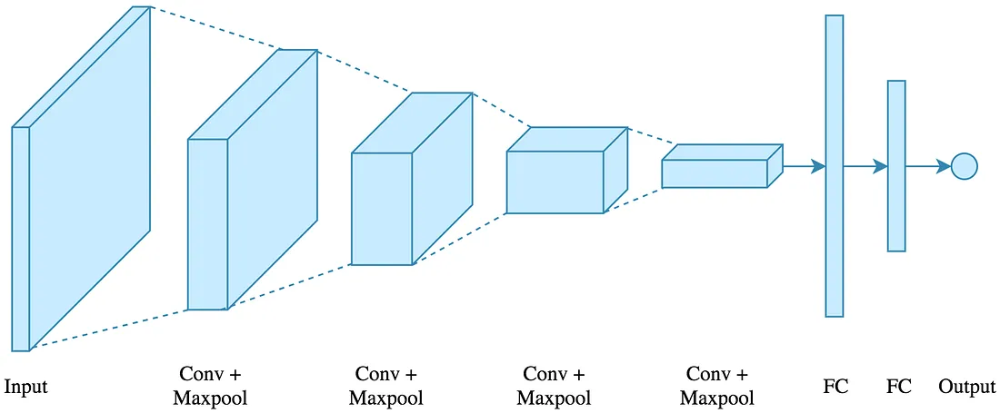
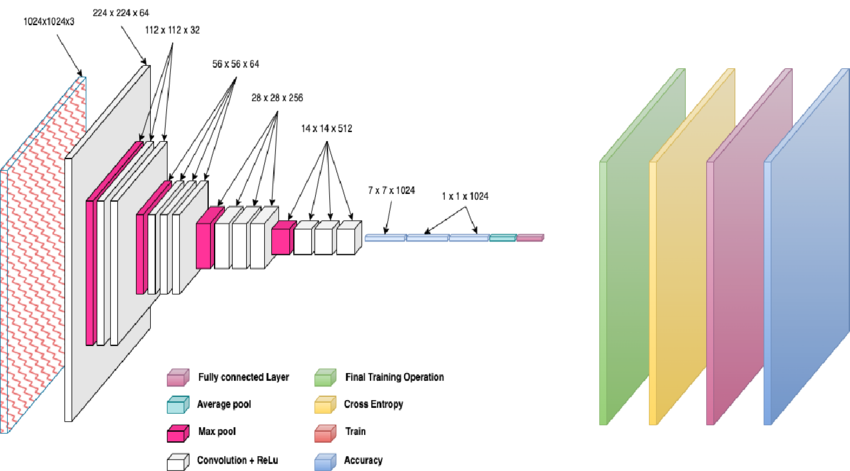
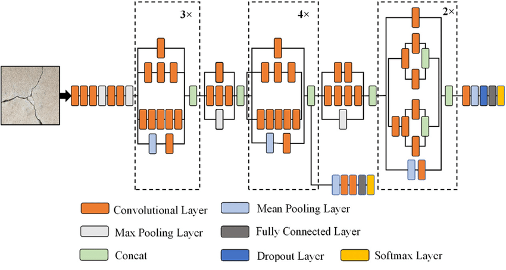

The intelligence behind RoadCrackVision’s Deep Learning Based detection system.
Our platform leverages state-of-the-art convolutional neural network architectures trained on real-world road datasets. These models are optimized for accuracy, efficiency, and scalability to ensure reliable pothole detection in diverse environmental conditions.

Convolutional Neural Networks form the foundation of our detection system. They specialize in extracting spatial features such as cracks, edges, and surface irregularities from road images.

MobileNet is designed for efficiency and speed. Its lightweight architecture enables real-time pothole detection with minimal computational cost, making it ideal for deployment on edge devices.

InceptionResNet combines residual learning and multi-scale feature extraction, allowing the model to learn deeper representations and improve detection performance under complex road conditions.
Our models are trained and evaluated using carefully curated datasets to ensure optimal generalization. By combining multiple architectures, we achieve a balance between performance, computational efficiency, and robustness.
View Model Performance